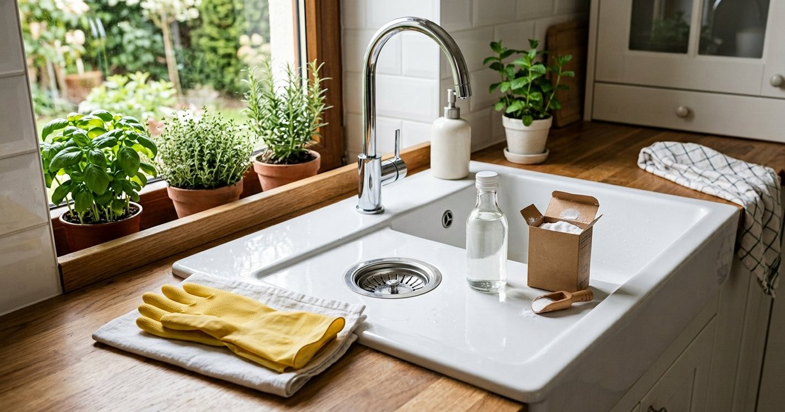

منع انسداد المصارف في المطبخ والحمام: عادات وأدوات آمنة
حافظ على مصارفك مفتوحة بعادات يومية بسيطة: لا دهون في البالوعة، مصفاة للشعر، ماء ساخن دوري، ومتى تستخدم البيكربونات والخل أو تستدعي فنيًا.

بيكربونات الصوديوم والخل تفاعل فوار يساعد في الصيانة الخفيفة وتهدئة الروائح، لكنه ليس مذيبًا للانسداد الكامل وليس بديلًا عن إزالة السبب الفعلي. لا تخلط أي منظف مصارف مع آخر، ولا مع البيكربونات أو الخل، فقد ينتج تفاعل خطير.
الخلاصة السريعة
معظم انسدادات المصارف تبدأ عادات صغيرة: دهون تُصب في البالوعة، شعر يمر عبر المصفاة، وبقايا صابون تتراكم. الوقاية أرخص من أي مزيل: مصفاة في الحمام، ومسح الدهون قبل الغسيل، وماء ساخن أسبوعيًا. عند الانسداد الكامل المتكرر استدعِ فنيًا ولا تصب مواد كاوية مرارًا.
ما الذي يسبب الانسداد؟
في المطبخ العدو الأول هو الدهون: تصب ساخنة سائلة فتمر بسهولة، ثم تبرد وتتصلب داخل الأنبوب وتلتصق بها بقايا الطعام مع الوقت. في الحمام السببان هما الشعر والصابون: الشعر يتشابك ويمسك بالصابون المترسب فيضيق الأنبوب تدريجيًا. تآكل الأنابيب القديمة وترسبات الماء العسر عوامل إضافية تبطئ التصريف.
الانسداد لا يحدث فجأة غالبًا؛ هو تراكم بطيء تظهر بوادره: تصريف أبطأ من المعتاد، صوت قرقرة عند صرف الماء، ثم وقوف الماء. من يعالج البطء مبكرًا يتجنب الانسداد الكامل.
قواعد المطبخ
- امسح الدهون من الأواني والمقالي بورق المطبخ قبل الغسيل وألقِ الورق في القمامة، لا في البالوعة.
- لا تصب الزيوت الساخنة أو المستعملة في الحوض؛ اجمعها في علبة وألقِها مع النفايات أو سلمها لجهة إعادة تدوير إن وُجدت في مدينتك.
- استخدم مصفاة حوض تمسك بقايا الطعام وأفرغها في القمامة لا في البالوعة.
- شغّل الماء البارد أثناء تشغيل التخلص من بقايا الطعام إن كان لديك جهاز لذلك، وتجنب إلقاء القشور الليفية والدهون فيه.
- أسكب كوب ماء ساخن (ليس مغليًا على أنبوب بلاستيكي رديء) بعد غسيل الأطباق الدهنية أسبوعيًا.
قواعد الحمام
مصفاة الشعر في مصرف الحمام أو حوض الاستحمام هي الخطوة الأولى: شعر يعلق بالمصفاة لا يدخل الأنبوب. نظف المصفاة بعد كل استحمام بقطعة مناديل، وتجنب غسل الشعر في الحوض دون مصفاة. بقايا الصابون والشامبو تتراكم أيضًا؛ اشطف الحوض بماء ساخن بعد الاستخدام عند الحاجة.
لا ترمِ في المرحاض ما ليس مخصصًا له: المناديل الورقية «الجافة» والمناديل المبللة ومواد النظافة النسائية وقطن التنظيف لا تتفكك كالورق الصحي وقد تسد الأنبوب مهما ادعى الغلاف أنه «قابل للرمي».
صيانة دورية خفيفة
- صب نصف كوب بيكربونات الصوديوم في فوهة المصرف.
- أضف كوبًا من الخل الأبيض تدريجيًا واترك الفوار يعمل 15 إلى 30 دقيقة.
- اسكب بعدها ماء ساخن (أو غليانًا هادئًا بعد أن يبرد قليلًا) لشطف الأنبوب.
- كرر شهريًا كصيانة، أو عند أول إحساس ببطء التصريف.
هذه الطريقة تفيد الروائح والترسبات الدهنية الخفيفة ولا تضر الأنابيب كالمواد الكاوية. إن لم يتحسن التصريف بعد مرة أو مرتين فالمشكلة أكبر من أن يحلها الفوار، والاستمرار في صب المحاليل لن يفيد وقد يطيل المعاناة.
عند الانسداد الكامل
ابدأ بالمكبس (الشفاطة) قبل أي مواد: ضع الماء حتى يغطي كوب المكبس، وشكّل إحكامًا على الفوهة، واضغط وارفع بإيقاع منتظم. إذا انسد حوض المطبخ وله فوهة جانبية للصرف الزائد فسدّها بقطعة قماش مبللة كي يعمل الضغط على الانسداد نفسه. لا تستخدم المكبس بعد صب مواد كاوية في الأنبوب؛ فقد يتناثر عليك المحلول الخطير.
للشعر العالق في الحمام قد يفيد «منظف حلزوني» يدوي بسيط يُدخل في الأنبوب ويلتقط الشعر، لكن استخدمه بلطف ولا تحشره بعنف في أنابيب قديمة هشة.
متى تستدعي فنيًا؟
- انسداد متكرر في نفس المصرف رغم العادات السليمة.
- عدة مصارف في البيت بطيئة معًا (قد تعني مشكلة في التمديدات الرئيسية).
- رائحة مجاري مستمرة لا تزول بالتنظيف.
- ماء يصعد من مصرف عند تشغيل آخر (تغذية عكسية).
- تسرب أو بلل أو بقع ماء قرب الأنابيب.
مواد كاوية: تحذير
مزيلات الانسداد الكيميائية القوية قد تنجح أحيانًا لكنها قد تتلف الأنابيب البلاستيكية والمعدنية القديمة مع الاستخدام المتكرر، وأبخرتها خطيرة في الأماكن سيئة التهوية. إذا استخدمت واحدة فاتبع تعليمات الملصق حرفيًا، وارتدِ قفازات، وافتح النوافذ، ولا تخلطها مع أي منتج آخر أبدًا، ولا تستخدم المكبس بعدها.
أسئلة شائعة
الماء المغلي مفيد أم ضار؟
الماء الساخن يذيب الدهون، لكن الغليان الكامل قد يشقق أنابيب بلاستيكية رديئة أو يلحق ضررًا بوصلات قديمة. استخدم ماء ساخنًا من الصنبور، أو ماء غُلي وترك يبرد قليلًا.
لماذا تخرج رائحة من المصرف رغم نظافته؟
قد يكون هناك ترسب في جدار الأنبوب الداخلي أو جفاف في «الكوع» الذي يمنع صعود روائح المجاري في مصرف نادر الاستخدام؛ صب الماء فيه أسبوعيًا أو عالجه بصيانة البيكربونات والخل.
هل تمنع المصفاة كل شيء؟
تمنع الشعر وبقايا الطعام الكبيرة، وهي أهم خطوة، لكن الدهون الذائبة تمر عبر المصفاة؛ لذلك تبقى قاعدة «امسح الدهون قبل الغسيل» ضرورية معها.
أخطاء شائعة مع المصارف
صب الزيت الساخن «لأنه سائل». رمي بقايا القهوة والدهون في الحوض. انتظار البطء حتى يتحول انسدادًا كاملًا. استخدام مواد كاوية كل أسبوع «وقاية» فتأكل الأنبوب. المكبس بعد المحلول الكاوي. إهمال مصفاة الشعر ثم الدهشة من الانسداد. العادات اليومية الصغيرة أرخص وأأمن من أي مزيل كيميائي، والفني المبكر أوفر من إصلاح أنبوب تالف.
الخلاصة
منع الانسداد ثلاث قواعد: لا دهون في البالوعة، مصفاة للشعر وبقايا الطعام، وصيانة دورية بالماء الساخن والبيكربونات والخل. عند البطء عالج مبكرًا، وعند الانسداد المتكرر استدعِ فنيًا بدل تكديس المحاليل الخطرة.